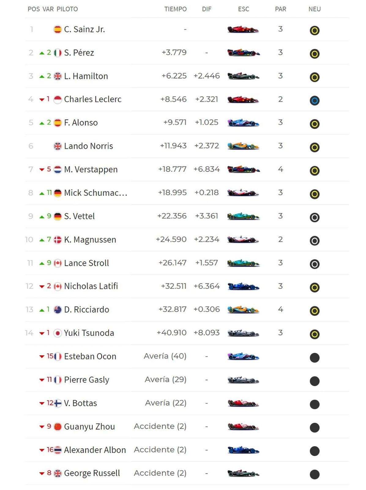

Carlos Sainz de Ferrari ha conseguido su primera victoria en la Fórmula 1 después de una impresionante competición en el Gran Premio de Gran Bretaña, el español terminó por delante del Red Bull de Sergio Pérez y el Mercedes de Lewis Hamilton. La clave de la victoria de Sainz fue un coche de seguridad tardío causado por Esteban Ocón retiró a su Alpine - Sainz y luego atacó a su compañero de equipo Charles Leclerc con neumáticos nuevos en el reinicio para reclamar la P1 y salir para su primera victoria en su salida número 150 del Gran Premio.
La FIA ha confirmado que Zhou Guanyu y Alex Albon están conscientes y son llevados al centro médico de Silverstone después de una colisión en la primera vuelta en el Gran Premio de Gran Bretaña. Con Albon comenzando el P16 y el Zhou P9, Zhou se vio atrapado en un incidente que involucró a Pierre Gasly y George Russell que vio a su Alfa Romeo hacer un fuerte contacto con las barreras, con otro incidente detrás que involucró a Albon, Sebastian Vettel, Esteban Ocon y Yuki Tsunoda.